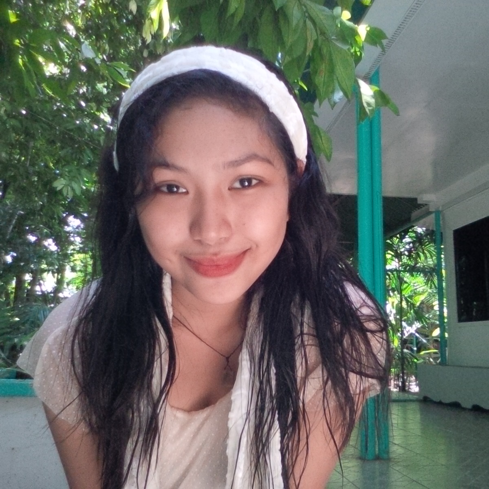

The Daisy Ree Project
This project is dedicated to my beloved sister Daisy Ree. The goal of this project is to build a fully functioning and interactive website from scratch to showcase the lively and adventurous journey Den Den had.